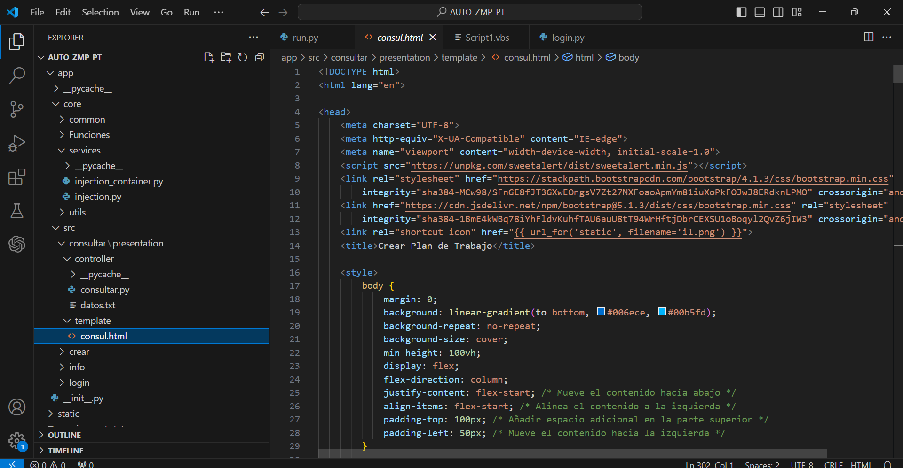

Información Personal
Nombre: Pedro Pascual Murcia Vargas
Email: pmurciavargas4@gmail.com
Teléfono: +57 3133732310
Soy estudiante de ingeniería de sistemas en mi último semestre. Tengo experiencia en Python y he trabajado en varios proyectos que buscan facilitar la interacción inclusiva.
Mi Ubicación

El proyecto consiste en realizar un aplicativo que permita a las personas con discapacidad auditiva, a interactuar con las personas que no manejan el lenguaje de señas. Para más información sobre este proceso verlo en mi canal de YouTube y perfil de LinkedIn los cuales lo pueden encontrar en la parte inferior de la página.

En la primera fase llevo a cabo mediante el lenguaje de programación Python donde se utilizaba este para realizar una conversación entre personas con discapacidad auditiva y las personas que no manejan el lenguaje de señas.

En la segunda fase se llevó esta base a prueba, en la fundación Santo Cristo de Ubate donde se realizó una simulación entre una persona que no maneja el lenguaje de señas y una persona con discapacidad auditiva.

Con base a la información adquirida en la fundación Santo Cristo se pudo obtener nuevas bases para gestionar el proyecto las cuales fueron implementar OpenCV (una librería de Python que permite la activación de la cámara de dispositivo) con esto se pudo crear un entrenamiento el cual identifica las diferentes posiciones de las manos y reconoce qué letra del lenguaje de señas.
Durante mi proceso de practica en la empresa ISA INTERCOLOMBIA se desarrollo un aplicativo web para la automatizacion de los planes de trabajo, los cuales consisten en la documentacion de los manteniminetos de las subestaciones de energia del pais este aplicativo se desarrollo mediante el lenguaje de programación Python, Java Script y la implementacion de HTML, este aplicativo cumple la funcion de subir la informacion al software de gestión empresarial SAP, esto mediante la creacion de SCripts para la automatizacion de las condiciones de equipo al momento de realizar mantenimineto.

Visita a la subestacion San Felipe, para comprender como era el funcionamiento y procedimientos al momento de realizar manteniminetos de las subestaciones de energia.
Interfaz del aplicativo, mendiante la implementacion de arqitectura limpia, conexion de Scripts diseño con HTML y CSS

inicio de sesion del aplicativo, con el cual solicita las credenciales para iniciar sesion en SAP lo cual perimitira subir la informacion del plan de trabajo.
creacion de plan de trabajo, mediante la implementacion del aplicativo web, en el cual tambien se automatizan las condiciones de equipo para posteriormente subir la informacion a SAP.

Plan de trabajo creado y subido con exito a SAP.
Esta sección destaca las herramientas con las que estoy familiarizado y que he empleado activamente en el desarrollo de diversos proyectos. Cada una de estas herramientas ha sido clave para afrontar los retos técnicos, optimizar procesos y garantizar la calidad en los resultados obtenidos. Gracias a ellas, he podido materializar ideas, cumplir objetivos y adaptarme a diferentes contextos y necesidades.

Python
Lenguaje versátil que utilizo para desarrollar soluciones automatizadas, análisis de datos y aplicaciones robustas.

Mongo -Db
Base de datos NoSQL flexible y escalable, ideal para manejar datos estructurados y no estructurados en mis proyectos.
Microsoft 365
Suite de productividad que empleo para colaboración, gestión de documentos y optimización de flujos de trabajo.

SAP
Herramienta empresarial que manejo para la planificación y gestión eficiente de recursos y procesos organizacionales.
Tecnologías Frontend: HTML, CSS y JavaScriptc
Conjunto de herramientas clave para diseñar y desarrollar interfaces web dinámicas, intuitivas y atractivas.
Certificados
Certificados
Certificado obtenido en Udemy, en el cual se explicaba todas herramientas de Google Apps Script, explicando desde Google gmail, Google Sheets hasta Script y SQL.
Certificado obtenido en Platzy, para prevenir ciberataques mediante las buenas prácticas de seguridad.

Certificado obtenido en Udemy el cual enseñaba Python desde cero y finalizaba con el desarrollo de un proyecto de reconocimiento facial.
Certificado obtenido en la academia Shakespeare, la cual me sirvió para tener un nivel de inglés B1.

Certificado obtenido en Platzy, donde enseñaba Python desde cero hasta un nivel avanzado.

Certificado obtenido en la universidad de Cundinamarca por participar en el taller de diseño grafico.
Certificado obtenido en la universidad de Cundinamarca por participar en el taller de estadistica, con el fin de implementar herramientas adecuadas para el analisis de datos.
Certificado obtenido en la Pagina de Math Words el cual infiere en el contro de Simulink una herramienta de Matlap.
Certificado obtenido en la Pagina de Math Words el cual infiere en el contro de Stateflow onramp el cual es un curso intruductorio sobre Math-lap.
El proyecto consiste en realizar un aplicativo que permita a las personas con discapacidad auditiva, a interactuar con las personas que no manejan el lenguaje de señas. Para más información sobre este proceso verlo en mi canal de YouTube y perfil de LinkedIn los cuales lo pueden encontrar en la parte inferior de la página.
El proyecto consiste en realizar un aplicativo que permita a las personas con discapacidad auditiva, a interactuar con las personas que no manejan el lenguaje de señas. Para más información sobre este proceso verlo en mi perfil de LinkedIn.
En la primera fase llevo a cabo mediante el lenguaje de programación Python donde se utilizaba este para realizar una conversación entre personas con discapacidad auditiva y las personas que no manejan el lenguaje de señas.
En la segunda fase se llevó esta base a prueba, en la fundación Santo Cristo de Ubate donde se realizó una simulación entre una persona que no maneja el lenguaje de señas y una persona con discapacidad auditiva.
Con base a la información adquirida en la fundación Santo Cristo se pudo obtener nuevas bases para gestionar el proyecto las cuales fueron implementar OpenCV (una librería de Python que permite la activación de la cámara de dispositivo) con esto se pudo crear un entrenamiento el cual identifica las diferentes posiciones de las manos y reconoce qué letra del lenguaje de señas.